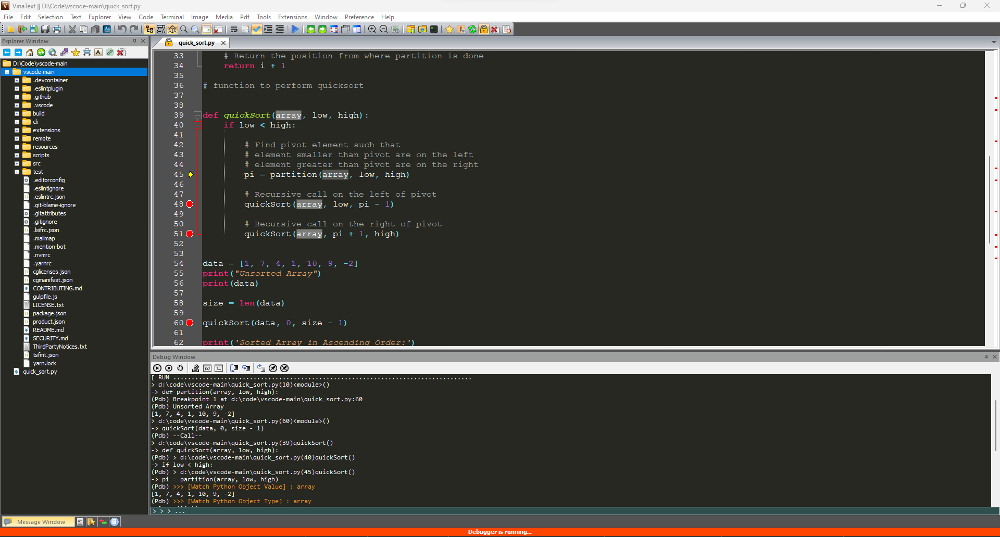

Open source Text Editor and File Viewer for Window user.
The software is designed in form that is similar to Visual Studio Code, Sublime Text, ...



VinaText is designed in tab form (similar to Visual Studio Code, Sublime Text, ...), supports the function of creating groups of files, viewing vertically, horizontally.
Explorer window can open more than 200 file formats. View dozens of common file types, all with one program. Bring all your essential applications into a single workplace. You can also print many file formats from images, text, pdf,...
With basic image processing tools that allow you to quickly edit your favorite screenshots or photos.
- Allowing to display bitmap images and videos with high resolution.
- Can display gif animation file with high frame rate.
- Support to export images to a variety of bitmaps bmp, tiff, png, jpeg, ...
- Support multiple cursor, Column editing mode, Highlight line, Support google search, translate text on the spot,...
- You can also define your search scope. You can search not only the current open file in the editor but also all open documents, container folders, specific paths. Support many different search modes.
- Explorer window indexes files and folders from all attached drives so you can look through all drives to find what you're looking for.
- Exclusion filter allows you to exclude files by name, path, date, file size and parent folder using wildcards or specific text/phrases.
- Supports many popular languages.
- Debugger support for C, C++, Python and JavaScript
- Autocomplete keywords
- Annotate errors after compilation
- Support operation on terminal: MS-DOS CMD, PowserShell, Window Subsystem Linux, ...
- VinaText is written in C/C++ and based on Win32 API so it provides high performance and small program size.
- Use less than 5 MB of RAM and less than 10 MB of your hard drive.
Double-click a word to highlight all matching words.
Double-click the tab area to display the path in the explorer tree or [Ctrl + Shift + Q].
Move the mouse to the tab area and [Ctrl + Shift + C] to copy the full current path.
[Ctrl + Shift + E] to open the window explorer tab at the parent folder.
[Ctrl + O] to open the file.
[Ctrl + Shift + O] to open a folder.
[Ctrl + N] to create a new editor tab.
[Ctrl + S] to save the current changes.
[Ctrl + Z] to undo changes on the editor.
[Ctrl + Y] to redo the changes on the editor.
[Ctrl + F] to open quick search popup.
[Ctrl + H] to open a quick alternative pop-up.
[Ctrl + G] to open the Goto dialog box.
[Ctrl + Shift + G] to quickly search all selected text.
[Ctrl + Shift + N] to open a new VinaText instance.
[Ctrl + Shift + T] to open a recently closed file.
[Ctrl + Alt + T] to open a terminal tab at the container folder.
[Ctrl + Shift + W] to open the opened file manager dialog.
[Ctrl + W] to close the current file.
[F4] to reload the file contents.
[F3] to search selected text on google browser.
[F1] to translate the selected text into the preset language.
[Ctrl + Shift + M] to fold/unfold all brackets.
[Ctrl + Shift + V] to paste the text into the quote.
[Windows + V] to open the clipboard history dialog box.
[Ctrl + J] to disable editing mode.
[Ctrl + D] to expand the selection to the next matching word.
[Ctrl + Shift + A] to expand the selection to all matching words, to a single quote.
[Alt + L] to split the selection into lines.
[Alt + Left Mouse Drag] to use column editing mode.
[Ctrl + Alt + DownArrow] to extend the selection to the next line.
[Ctrl + Alt + UpArrow] to extend the selection down to the previous line.
[F5] to run the current file.
[Shift + F5] to stop the current program.
[F5] to refresh the tree.
[Ctrl + Enter] to open the current path by default application.
[Ctrl + Shift + C] to copy the current path in full.
[Ctrl + Alt + T] to open a terminal tab at the current path.
[Ctrl + Shift + Q] to bring focus back to the editor.
[Ctrl+F] to open the Search Paths/Navigation dialog box.
[Ctrl + Shift + F] to search for text in the current directory.
[Ctrl + Shift + H] to replace the text at the current directory.
[Ctrl + G] to jump to any path.
[Ctrl + Shift + M] to collapse the current directory.
[Ctrl + Shift + N] to expand the current directory.
[Ctrl + M] to create a new folder.
[Ctrl + N] to create a new file.
[Delete] to send the file to the trash.
[Ctrl + B] to highlight a path.
[Tab] to display only one path.
[Shift + Tab] to go back to the root folder on the desktop.
[F2] to rename the path.
[Shift + Right-click] to open the system menu.